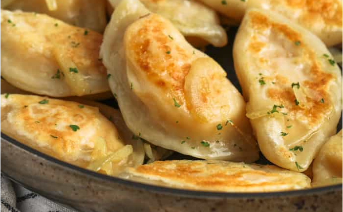

Home
Pierogi

Description
This is a basic pierogi recipe. It is a traditional Polish dumpling that can be filled with various ingredients, including potatoes, cheese, and onions. The dough is made from flour, water, and eggs, and the filling can be customized to your liking. Pierogi are typically boiled and then pan-fried for a crispy texture.
Ingredients
Dough
- 6 cups all-purpose flour
- 2 cups cold water divided
- 2 large eggs beated
- 6 tablespoons oil
- 2 tsp salt
Filling
- 3 3/4 pounds baking potatoes
- 1 medium white onion finely diced
- 1/3 cup salted butter softened, divided
- 4 1/2 cups shredded cheddar cheese finely shredded
- salt to taste
- white pepper to taste, or very fine black pepper
For Serving
- 1 onion diced or thinly sliced
- 2 tbsp salted butter or as needed for frying
- sour cream optional, for serving
- fresh chives optional, for serving